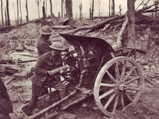

| JANUARY
Charles has left the Somme
region and returned with his unit to the Western Front. A long,
grim winter begins for the Allies.
LEAVE FOR CHARLES AT LAST
After more than two years, Charles is granted
leave from January 12 to 23, 1917. The soldiers
cannot go home to Canada, but they are happy to go to
England or to a big French city, especially
Paris. We do not know where Charles chose to go, but,
like all these young men, he surely wants to make the most of
his leave. Most of them party,
seeking simple pleasures such as drink or sex.
They play tourist and buy postcards for their loved ones.
 Despite this temporary escape, these
young men know they must go back to the Front. Charles
is back with his unit on January 23.
It is
very cold and, over the following days, the routine resumes. Salvoes are fired
at various targets, which are hit, according to
observations made by aircraft after the firing.
The Canadian artillery is now more and more seasoned
and better equipped, the communications system works
better, and the results show it.
FEBRUARY
The British general Byng comes to inspect the battery at the
start of the month. The firing is more or less heavy depending on
the day; much of it supports raids carried out by the
4th Canadian Division.
CHARLES'S SECOND
HOSPITAL STAY
On February 21, Charles is admitted to hospital.
He is suffering from "herpes praeputical, A265". It is
the first sign of a venereal disease he caught during his
leave.
These diseases were a serious health problem
in the armies. From 1940 on they were treated with
penicillin, but in Charles's day the only known
remedy was mercury. It had been given in various forms for centuries; in fact, mercury killed as many as
the disease itself.
ON FEBRUARY 28, 1917, CHARLES TURNS 24.
 Charles
is first admitted to field ambulance #1,
that is, tents at Cité 9, near Barlin. Then, on March 6, he is
transferred
to No. 39 Canadian General Hospital at Le Havre, in
Normandy. He is treated there until May 13,
1917. At this stage of the war, the Commonwealth has its general hospitals in Normandy,
using requisitioned buildings or tents
set up on large grounds, such as the Rouen
racecourse. I have not found out what kind of facility
Charles knew at Le Havre. Cemeteries were set aside for
those who died in these hospitals. Charles
is first admitted to field ambulance #1,
that is, tents at Cité 9, near Barlin. Then, on March 6, he is
transferred
to No. 39 Canadian General Hospital at Le Havre, in
Normandy. He is treated there until May 13,
1917. At this stage of the war, the Commonwealth has its general hospitals in Normandy,
using requisitioned buildings or tents
set up on large grounds, such as the Rouen
racecourse. I have not found out what kind of facility
Charles knew at Le Havre. Cemeteries were set aside for
those who died in these hospitals.
APRIL During
Charles's absence the Battle of Vimy takes place, from April 9 to
12. The four Canadian divisions fight together
for the first time, and take Vimy Ridge. In this way Canada asserts itself more
and more as a nation.

The Battle of Vimy, by Black.
MAY On the
13th, Charles rejoins his unit, which is still based in the
Vimy area. Every day the battery fires salvoes at
various targets.
The unit has received better guns. Calibration
firing is needed to get used to these new
weapons. Observation of the firing and its results is
more precise, notably observation from aircraft, which
allows fire to be corrected quickly to hit the
target better. Communications and range-finding improve too,
letting the artillery respond better to "SOS
Lines", the calls for help coming from the
trenches asking for artillery fire to protect them
from enemy attacks.
JUNE Charles's
unit is kept busy. Every day hundreds of salvoes
are fired. For example, on June 8, more than a thousand salvoes, most
of them "gas
shell", are fired in support of a raid by the
4th Canadian Division. On June 15, an officer of the unit
is wounded; he dies at the end of the day.
|